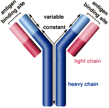
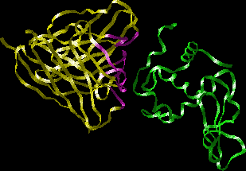

Antibody Structure Problem Set
Problem 1. Antibody structure
Tutorial to help answer the question
The fragment antigen binding (Fab), or variable regions, of antibodies share a common structure composed of several beta sheets connected by loop regions. These loops connecting the sheets include:
A. framework regions of both light and heavy chains B. hypervariable regions of the light chain C. hypervariable regions of the heavy chain D. hypervariable regions of the light and heavy chains
Tutorial
|  | An antibody's variable regions are located at the tips of the Y-shaped molecule. The specific amino acid sequence in the variable region determines the antibody's specificity against a single antigen. Both heavy and light chains compose the variable regions. |
|
The variable region is further subdivided into hypervariable (HV) and framework (FR) regions. Looking at the antibody's secondary protein structure, the variable regions of the light and heavy chains are each composed of beta sheets connected by amino acid loops. The hypervariable region, or complementary determining region (CDR), has highly variable amino acids that form the loops (purple). Amino acids in these loops are in direct contact with antigen (green). The FR regions (yellow) have a more stable amino acid sequence; they form a beta-sheet structure which serves as a scaffold to hold the HV regions in position to contact antigen. |


The University of Arizona
Wednesday, June 21, 2000
Contact the Development Team
http://biology.arizona.edu
All contents copyright © 2000. All rights reserved.